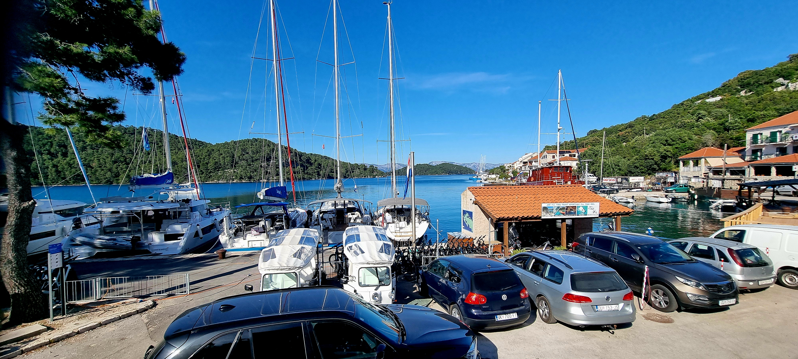
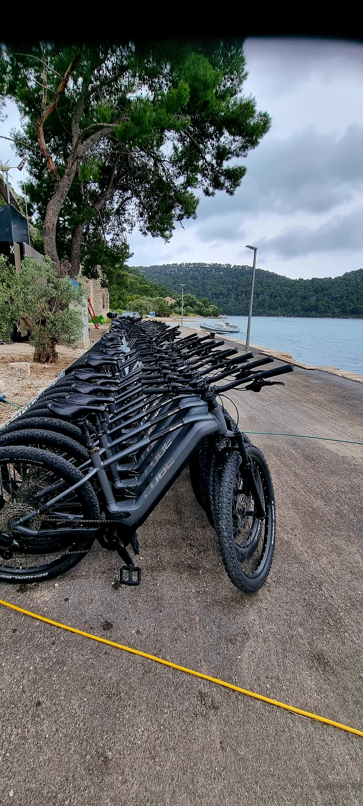
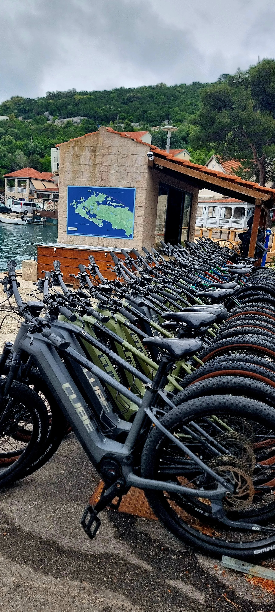
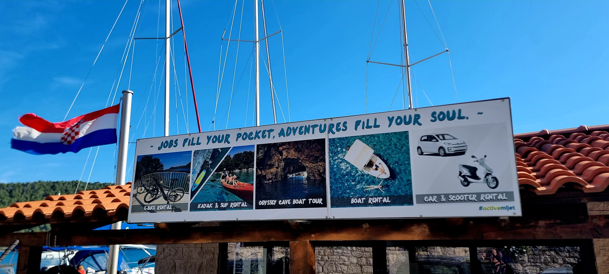
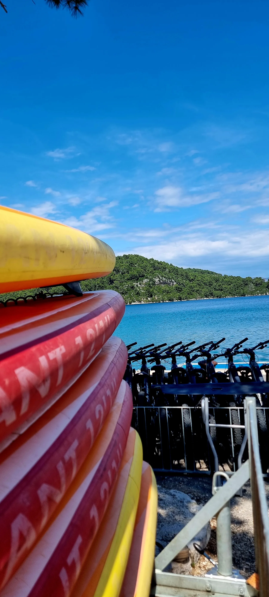
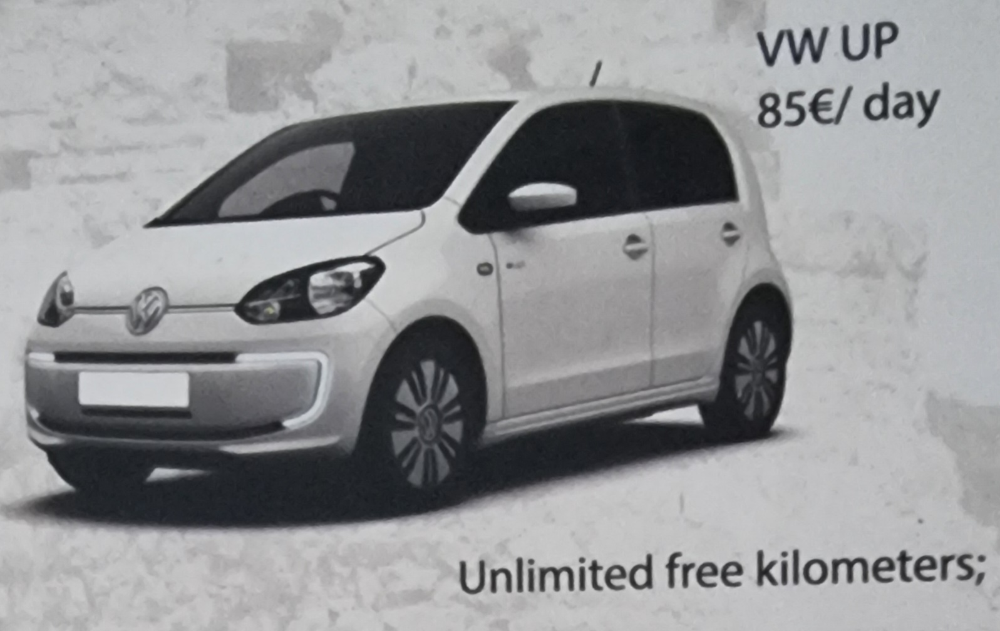
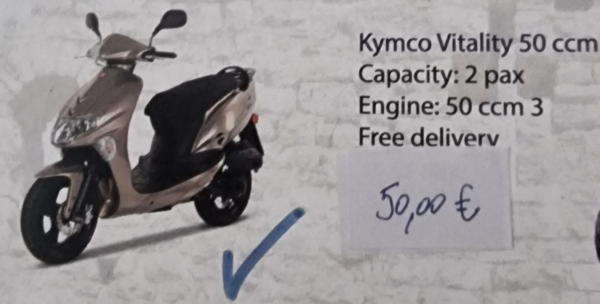
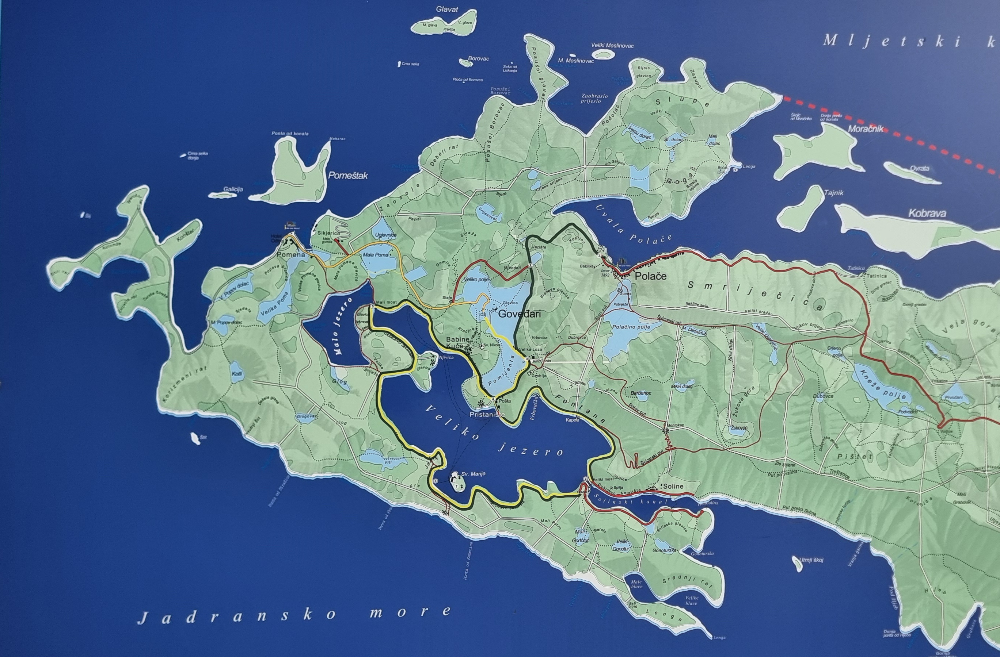
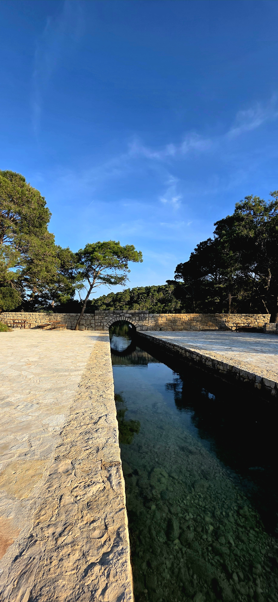
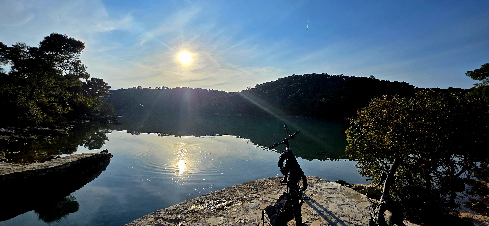
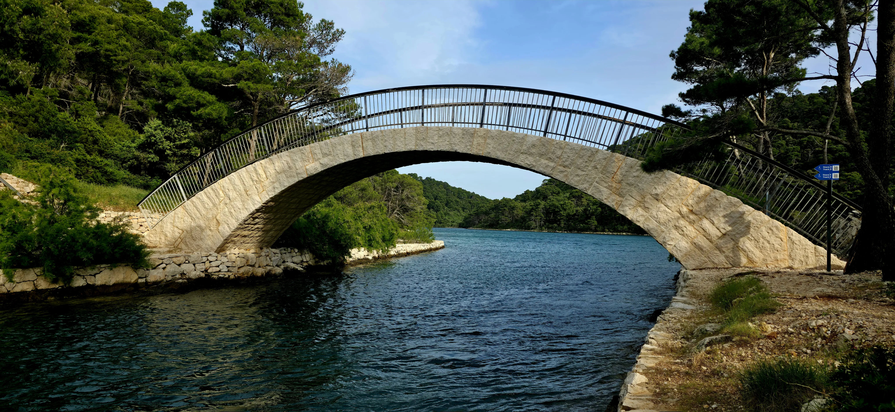
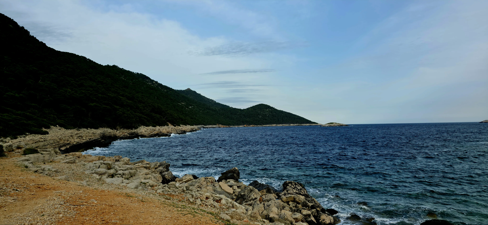
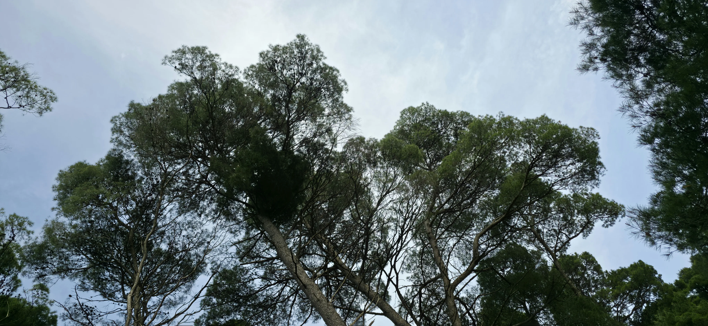
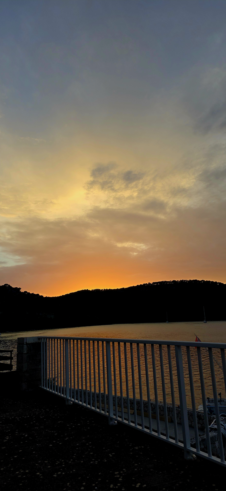
Dominant tree covering most of the park. Brought to Mljet by the ancient Greeks. Bluish-green needles 6–10 cm, grows to 20 m. Dense around both lake shores.
Evergreen oak with broad spherical crown, dark grey cracked bark, leathery leaves to 7 cm. Produces acorns. Key areas: Velika dolina, Valakija, Planjak, Knežepolje.
Inhabited since the 2nd millennium BC. Romans built the third largest Adriatic palace here. In 1151 Benedictine monks built St. Mary's Monastery. The island passed through Republic of Ragusa, Napoleonic France, Austria-Hungary, Italy, Yugoslavia, and became part of Croatia. National Park since 1960.